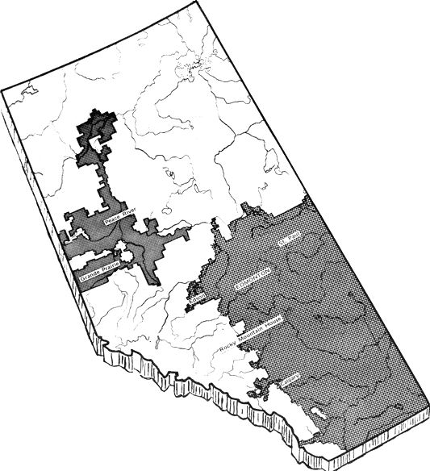
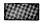
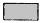

Alberta's Homestead Sales And Land Leases
The land is still there for the settling. Here’s information regarding homestead sales, acquisition of recreational land and sale or leasing of land in Alberta by the Department of Lands and Forests.
September/October 1970
HOMESTEADING IN CANADA
NOTE: While this map is basically correct, it is too small to show fine detail with any
extreme accuracy.
For a 20" x 33" map that is both
highly detailed and represents the
official word of the Province of
Alberta, write:
Department of Lands and Forests
Natural Resources Building
109th Street and 99th Avenue
Edmonton, Alberta, Canada
I NFORMATION REGARDING HOMESTEAD SALES
GOVERNMENT OF THE PROVINCE
OF ALBERTA
Form LH 48
Revised, June 1970
DEPARTMENT OF LANDS AND FORESTS
NATURAL RESOURCES BUILDING
EDMONTON, ALBERTA, CANADA
1. WHO MAY APPLY FOR A HOMESTEAD SALE? Any person who has reached the age of eighteen years but not the age of seventy one, who is a British subject or a Canadian citizen, or declares his inten tion of becoming a Canadian citizen, and who has resided in Albertafor a total of at least one year in the three years immediately prior to making application.
A veteran who furnishes a certificate from the Veterans' Land Act 1942 (Canada) certifying he is a veteran, may apply regardless of the residence qualifications, he may also apply for financial assistance under the same Act.
If eligible, an applicant may apply for a homestead sale comprising not more than four adjoining or cornering quarter sections of public land as a unit, or, he may apply for more than one homestead sale subject to the condition that each unit applied for is within a ten mile radius of each other unit. A husband and wife by their individual applications cannot obtain more than a total of four quarter sections under homestead sale.
If the applicant or the spouse owns other land, the combined area of the land applied for as a homestead sale and the land owned shall not exceed four quarter sections. The land applied for as a homestead sale must be within a ten mile radius of all land owned.
Rented or leased land is not considered when establishing the amount of homestead land for which an applicant may apply.
The application fee of $25.00 per quarter section, payable at the time of application, will be applied toward payment of the purchase price if the purchaser obtains a homestead sale. The fee is refundable if the department declines to issue a homestead sale agreement.
2. WHAT LANDS ARE OPEN FOR HOMESTEADING? Any vacant available public land which is located in the area where homesteading is permitted and of which at least 50% is arable. Before a sale is granted the land applied for must be inspected by an officer of the department to ascertain the value of the land and improvements, if any, and whether the land is suitable for the granting of a homestead sale. Lists of lands which are available cannot be supplied, however, on request to the Edmonton office, four township plots will be supplied without charge, showing the land available in each township. (Additional plots are fifty cents each.) The available homestead land is located in the Peace River area.
3. WHERE SHOULD A PERSON APPLY? Application must be made in person either at a Sub-Agency Land Office, or at the office of the Department of Lands & Forests, Natural Resources Building, Edmonton. Sub-Agencies are located in Calgary, Rocky Mountain House, Edson, St. Paul, Grande Prairie, and Peace River. Applications may also be taken by field inspectors of this department working in the area in which the homestead is being applied for.
4. WHAT DUTIES ARE REQUIRED? (A) The homestead sale contract requires the purchaser to break a minimum area each year; this is usually 10 acres per quarter section under contract, to a minimum of 40 acres per quarter section by the end of the fourth year and 60 acres by the end of the eighth year. The land broken each year must be seeded to crop or summer fallowed each subsequent year.
(B) The purchaser is required to pay taxes commencing with the fourth year where there are less than 25 acres of land under cultivation at the time the homestead sale is executed. (It should be pointed out that most land open for homesteading does not contain any cultivation.
(C)
1. A purchaser must perform a minimum of three months residence annually commencing not later than the seventh year of the homestead sale. Residence must be completed on the homestead or on farm land of at least 80 acres located within 10 miles of the homestead.
2. Credit will not be granted for residence performed in periods of less than 30 consecutive days.
3. Residence performed by the purchaser while he is employed at an occupation other than farming is acceptable.
5. WHAT IS THE PURCHASE PRICE?
1. The purchase price is based on an appraisal of the land and must be paid in equal annual instalments over a ten, fifteen or twenty year term. The first instalment becomes due in the fourth year of the term where there are less than 25 acres under cultivation at the time the homestead sale is executed.
2. WHAT INTEREST IS PAYABLE? No interest is payable until the first instalment becomes due; thereafter, interest is charged on the balance of the purchase price and arrears at the rate of 4 1/2 % per annum.
3. The average value per acre may range anywhere from $5.00 to $15.00 and up per acre.
6.MUST A PURCHASER BUILD A HOUSE? No. However, where the purchaser builds a habitable house worth at least $1,000.00 on the land held under homestead sale and performs his residence duties in that house, he may be granted a credit of $2.00 per acre for each acre included in the homestead, but not exceeding $500.00. The house must be on the land held under homestead sale at the time the application for title is made. The credit may be applied to the purchase price or be refunded to the purchaser after an application for title has been approved.
7. WHAT HAPPENS IF A HOMESTEADERIS UNABLE TO CONTINUE HOMESTEADING? If a homesteader is not able to continue it is possible under certain conditions to transfer the agreement.
8.HOW MAY A PURCHASER OBTAIN TITLE? When the purchaser has performed a minimum of 12 months residence in accordance with the Public Lands Act, and has an area under cultivation equivalent to the area required to be under cultivation by the end of the fifth year of the term of the homestead sale, and has paid the purchase price in full, he may apply for title.
9. CAN THE DEPARTMENT CANCEL A HOMESTEAD SALE? Yes. A homestead sale is a conditional agreement and may be cancelled by the department for failure on the part of the homesteader to comply with the terms of the agreement.
NOTE
A homestead application does not have priority over other types of application. All applications are submitted to a Farm Adjustment Committee which recommends whether or not and to whom a disposition may be issued. Generally, the Farm Adjustment Committee bases its recommendation on the applicant's farming background, financial ability to develop the land, and whether the issuance of a disposition will enlarge or consolidate his present holdings, thus enabling him to have an economic unit. A Committee will not, usually, recommend the issuance of an agreement to an applicant without experience, capital or other land.
THIS INFORMATION SHEET HAS NO LEGISLATIVE SANCTION.
THE PUBLIC LANDS ACT 1966 AND AMENDMENTS THERETO
SHOULD BE CONSULTED FOR COMPLETE DETAILS.
GENERAL INFORMATION CONCERNING
ACQUISITION OF RECREATIONAL LAND AND
THE SALE OR LEASING OF LAND IN ALBERTA
BY THE
DEPARTMENT OF LANDS AND FORESTS
As the area of the Province of Alberta is 255,285 square miles, anyone wishing to acquire land should endeavour to confine their enquires to four townships in a specific district of the province. It would not be practical for the department to check its entire records to determine different parcels of land available throughout the various districts of the province. Plots covering four townships are furnished free of charge. Additional plots are charged for at 50 cents each.
Generally speaking, heavily timbered lands, lands suitable for recreation along lakes or rivers, or lands which are cut up by river banks, thereby making such lands subject to erosion, are not offered for sale or cultivation purposes.
Lands adjoining lakes, rivers or other areas which have been inspected by the department and found unsuitable for a provincial park, recreational lease or subdivision, may be applied for on a lease or annual permit basis. An accurate land description and sketch of the area must be furnished.
Lands within an area designated as Forest Area are not normally available for settlement or sale, except in the following cases:
1. Application for a lease will be considered where the land is required for commercial purposes, such as a service station or a motel site, or for the development of natural resources, other than agriculture.
2. Lots are made available to the general public either by lease or sale where a subdivision is surveyed for summer cottage sites or townships.
There are a number of these subdivisions throughout the province where lots are available and it is the intention of the department to provide more of these in the future. Lots in these subdivision developments are made available pursuant to the Miscellaneous Lease Regulations which may be obtained from the department at Edmonton, or one of the Sub-Agencies. Applicants for lots are required to submit complete plans and specifications of the cottage they intend to construct, and these plans must be approved before a lease can be issued. In certain subdivisions the lots are sold to the lessees after construction is satisfactorily completed.
Persons wishing to establish in one of the above areas on a summer cottage subdivision may find it to their advantage to visit Edmonton and request an interview with a member of the department. All the information required with reference to lease costs, purchase price, cottage specifications and instructions on how to reach the subdivision concerned, will be furnished.
By authority of The Public Lands Act or Orders-in-Council passed under authority of that Act, the department disposes of public lands by sale and under various forms of leases and permits. The following are a few of the more important methods of disposition of public lands for agricultural purposes, in the settlement area.
PUBLIC AUCTION SALES:
Public lands for which a request has been made, and a request fee of $5.00 per quarter section has been paid, may be offered for sale by auction. An investigation is made to determine whether it is in the public interest to sell the land, and to value it. The department sets a minimum price on the land, but the land is sold to the highest bidder. The lands are sold in quarter section units. Public auction sales are held annually, usually in the spring, in various centres of the province. Lands in settlement areas, suitable for homestead sale purposes, are not usually offered for sale by auction. There are no restrictions as to who may bid at these auction sales.
AGRICULTURAL FARM SALES:
An established farmer residing on a farm in Alberta, of not less than eighty acres, for at least six months of the twelve months immediately preceding his application, and who is over eighteen years of age and under seventy-one years of age, who is a British Subject or a Canadian Citizen, and who owns four quarter sections or less, may apply to purchase privately available public lands, which are within two miles of the land he owns and two miles from where the applicant resides.
The total area applied for, including the land the applicant or his spouse owns, cannot exceed 800 acres. The price is based on an appraisal made by an inspector of this department.
CULTIVATION LEASES:
Cultivation leases may be issued, up to 320 acres, for any available public land, for a maximum of 10 years, where at least 40 acres per quarter section is found to be suitable for cultivation. A lessee is required to pay a cash rental based on a percentage of the assessed value, plus an amount equal to the taxes. A person must be eighteen years of age, a British Subject or Canadian Citizen, operating a farm in Alberta and have lived in Alberta for one year of the past three years. A veteran need not have lived in Alberta before acquiring a cultivation lease.
GRAZING LEASES:
Grazing leases are issued on available public lands for a term up to twenty years, where the land is found by inspection not to be suitable for a higher use, and is based on a formula which takes into account the carrying capacity of the land and the average price of beef on the Calgary stockyards. With the approval of the farmers who reside in the settlement area. Applicants must be British Subjects or Canadian Citizens.
HOMESTEAD SALES:
Any person who is eighteen years of age, and under seventy-one years of age, who is a British Subject or a Canadian Citizen, or declares his intention to become a Canadian Citizen, who does not own other land, or who owns or controls not more than three quarter sections, and who has lived in Alberta for one year out of the past three years, may apply for a Homestead Sale. Eligible applicants owning at least eighty acres of farm land have thirty days priority to apply for a homestead Sale.
The total area applied for cannot exceed four quarter sections, including the land the applicant or his spouse owns or controls.
GENERAL INFORMATION:
There is very little land available South of the City of Edmonton. Most of the public land that is available is of the grey wooded soil type and is covered with brush and trees. Most of the available lands lie in the Peace River and Grande Prairie areas.
Any person who wishes to acquire public land is urged to spend considerable time investigating the area where he wishes to locate before making an application.
Information concerning Tax Recovery land may be obtained from the Department of Municipal Affairs, 10363 - 108th Street, Edmonton, Alberta.
Information concerning employment in this province may be obtained from the Canada Manpower Centre, 10210 - 107th Street, Edmonton, Alberta. ,
Information concerning immigration to Canada, may be obtained by writing to the Department of Citizenship and Immigration, Ottawa, Ontario.
If requesting further information from the Director of Lands, Department of Lands and Forests at Edmonton, Alberta, please be specific in stating the location of the land in which you are interested, and the type of application you wish to make.
The offices of the Department of Lands and Forests, are located on the fifth floor, Natural Resources Building, 109th Street and 99th Avenue, Edmonton, Alberta, Canada.
|
 Available public lands in this area, which are suitable for the proposed use and are not required for conservation, recreational, wildlife habitat, forestry and other purposes, may be applied for pursuant to the Public Lands Act and the regulations. |
 Except for homestead sale applications, available public lands in this area, which are suitable for the proposed use and are not required for conservation, recreational, wildlife habitat, forestry and other purposes, may be applied for pursuant to the Public Lands Act and the regulations. |
 Forest lands not available for agricultural development other than grazing. Provincial public lands are managed for multiple uses including forest production, water, fish and wildlife, recreation, grazing and industrial development. |
|
 |
|
|